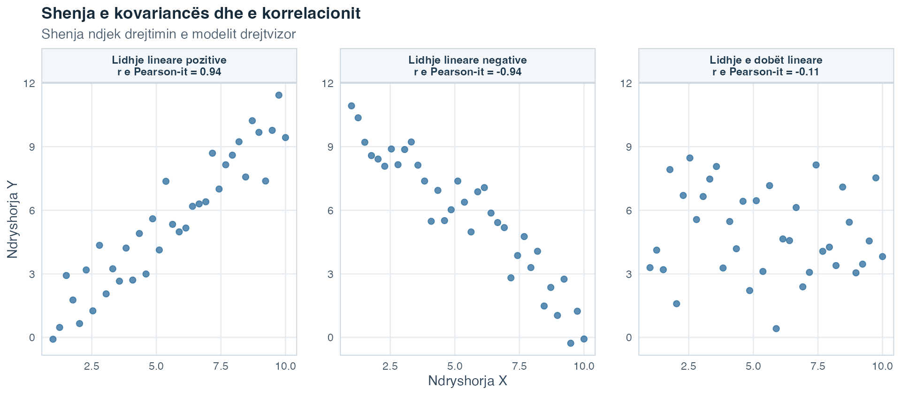
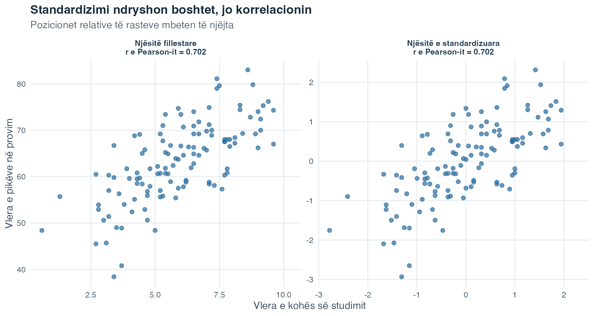
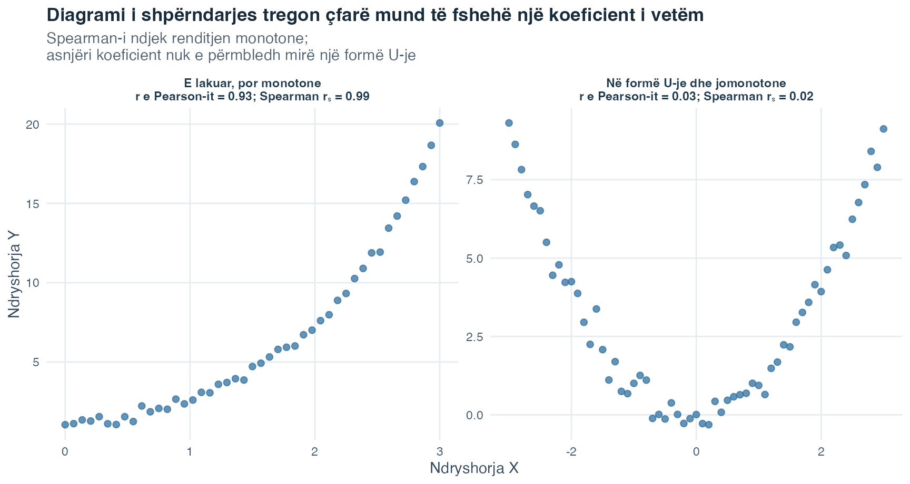
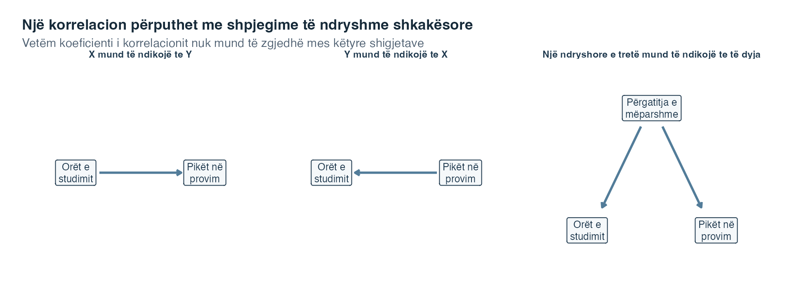

Fleta e ushtrimeve
Zgjidh PDF për shtypje ose Word për redaktim.
Hyrje në Statistikë · Tema 4
Tema 1 përshkroi nga një ndryshore në një kohë, ndërsa Tema 3 përdori rezultatet e kampionit për të bërë pyetje të kujdesshme për popullatën. Tani i sjellim dy ndryshore sasiore në të njëjtën pamje. Në vend që të pyesim vetëm si duket koha e studimit ose si duken pikët e provimit, pyesim nëse këto dy matje formojnë një model kur regjistrohen për të njëjtat raste.
Imagjino të vendosësh kohën javore të studimit dhe pikët e provimit të një studenti në një pikë të vetme, pastaj të bësh të njëjtën gjë për çdo student. A do të kishin prirje pikat të ngjiteshin së bashku, të zbrisnin së bashku apo të mos formonin ndonjë model të qartë në vijë të drejtë? A mund ta ndryshonte përshtypjen një pikë e pazakontë? Këto pyetje kanë rëndësi, sepse shumë pyetje kërkimore fillojnë duke shqyrtuar nëse dy madhësi të matura ndryshojnë së bashku, para se të kalojnë te parashikimi ose te modelet më të ndërlikuara.
Kur vlerat më të larta të njërës ndryshore priren të shfaqen bashkë me vlera më të larta ose më të ulëta të tjetrës, ndryshoret tregojnë një lidhje. Lidhja është një model i ndryshimit të përbashkët. Ajo nuk na tregon ende pse ekziston ky model. Mund të ketë rëndësi një ndryshore e tretë, drejtimi i ndikimit ose mënyra si janë matur ndryshoret.
Pika e nisjes është diagrami i shpërndarjes, një grafik ku çdo pikë përfaqëson një rast. Pozicioni horizontal i pikës tregon vlerën e atij rasti në njërën ndryshore, ndërsa pozicioni vertikal tregon vlerën në ndryshoren tjetër. Meqë të dyja koordinatat i përkasin të njëjtit rast, vrojtimet janë të çiftuara.
Në këtë temë zhvillojmë dy përmbledhje numerike të diagramit të shpërndarjes. Kovarianca shënon drejtimin në të cilin dy ndryshore sasiore ndryshojnë së bashku. Korrelacioni e standardizon këtë ndryshim të përbashkët, në mënyrë që drejtimi dhe forca e tij lineare të mund të krahasohen pavarësisht nga njësitë e matjes. Qëllimi nuk është ta zëvendësojmë grafikun me një koeficient, por të mësojmë si pamja dhe numri mbështesin së bashku një përshkrim të kujdesshëm.
Pyetja udhëzuese: Kur dy madhësi ndryshojnë së bashku, si mund ta përshkruajmë modelin pa e ngatërruar lidhjen me shkakësinë?
Një koeficient e përmbledh tërë diagramin e shpërndarjes në një numër. Shikoji gjithmonë së pari çiftet e vizatuara, sepse një numër i vetëm mund të fshehë një lakore, një diapazon të ngushtë të vrojtuar, grupe të ndara ose një pikë të pazakontë.
Në fund të kësaj teme do të jesh në gjendje:
Varianca fillon me një ndryshore. Për çdo vlerë \(x_i\), ajo mat shmangien \(x_i-\bar{x}\) nga mesatarja e kampionit dhe e ngre atë shmangie në katror. Kovarianca e zgjeron të njëjtën ide në dy ndryshore. Për çdo rast të çiftuar \(i\), ajo shumëzon shmangien në \(X\) me shmangien në \(Y\):
\[ s_{xy}=\frac{1}{n-1}\sum_{i=1}^{n}(x_i-\bar{x})(y_i-\bar{y}). \]
Lexoje formulën hap pas hapi:
Shenja e çdo prodhimi të kryqëzuar ka një kuptim të drejtpërdrejtë. Një rast që ndodhet mbi të dyja mesataret ka dy shmangie pozitive, prandaj prodhimi i tyre është pozitiv. Një rast nën të dyja mesataret ka dy shmangie negative, prodhimi i të cilave është po ashtu pozitiv. Një rast mbi njërën mesatare, por nën tjetrën, ka shmangie me shenja të kundërta, prandaj prodhimi është negativ.
Llogaritja e mëposhtme me pesë raste, e krijuar posaçërisht për këtë mësim, e mban të dukshëm kontributin e secilit rast. Të dyja mesataret e kampionit janë 3.
| Rasti | x | y | x - mesatarja(x) | y - mesatarja(y) | Prodhimi i kryqëzuar |
|---|---|---|---|---|---|
| 1 | 1 | 2 | -2 | -1 | 2 |
| 2 | 2 | 3 | -1 | 0 | 0 |
| 3 | 3 | 1 | 0 | -2 | 0 |
| 4 | 4 | 5 | 1 | 2 | 2 |
| 5 | 5 | 4 | 2 | 1 | 2 |
| Shuma | 15 | 15 | 0 | 0 | 6 |
Shuma e prodhimeve të kryqëzuara është 6. Me \(n=5\), kovarianca e kampionit është
\[ s_{xy}=\frac{6}{5-1}=1.50. \]
Rezultati pozitiv na tregon se vlera më të mëdha të \(x\) priren të shfaqen bashkë me vlera më të mëdha të \(y\) në këtë grup të vogël të dhënash. Vlera 1.50 nuk ka ende një kuptim pa njësi, ndaj nuk duhet lexuar si një matje universale e forcës.
Tabela tregon aritmetikën rresht pas rreshti. Figura vijuese tregon nga vijnë gjeometrikisht shenjat e këtyre prodhimeve të kryqëzuara.
![Një diagram shpërndarjeje me pesë raste ndahet nga vijat e ndërprera te x me vijë sipër baras me 3 dhe y me vijë sipër baras me 3. Zonat lart djathtas dhe poshtë majtas paraqesin kontribute pozitive në kovariancë, sepse të dyja vlerat ndodhen në të njëjtën anë të mesatareve të tyre. Dy zonat e tjera paraqesin kontribute negative, megjithëse aty nuk ndodhet asnjë rast i llogaritur. Një tabelë tregon të dyja shmangiet me shenjë dhe kontributin për secilin rast. Rasti 5 ndiqet dy njësi djathtas dhe një njësi lart nga pika ku priten vijat e mesatareve, duke dhënë kontributin pozitiv dy.](t04_cov-corr_files/figure-html/fig-covariance-geometry-1.png)
Vija vertikale e ndërprerë shënon \(\bar{x}=3\), ndërsa vija horizontale shënon \(\bar{y}=3\). Lexoji katër zonat me fjalë. Lart djathtas dhe poshtë majtas, të dyja vlerat ndodhen në të njëjtën anë të mesatareve të tyre, prandaj rasti jep kontribut pozitiv. Në dy zonat e tjera, vlerat ndodhen në anë të kundërta, prandaj rasti do të jepte kontribut negativ. Në këtë grup me pesë raste, asnjë pikë nuk ndodhet në një zonë negative. Megjithatë, hijëzimi tregon se ku do të lindte një kontribut negativ.
Rasti 5 e tregon llogaritjen. Fillo te pika ku priten vijat e mesatareve. Lëviz 2 njësi djathtas te \(x_5=5\), kështu që \(x_5-\bar{x}=+2\). Pastaj lëviz 1 njësi lart te \(y_5=4\), kështu që \(y_5-\bar{y}=+1\). Prodhimi i dy shmangieve me shenjë është \((+2)(+1)=+2\). Tabela tregon të njëjtat tri madhësi për secilin rast. Rastet 2 dhe 3 japin kontribut zero, sepse njëra vlerë ndodhet pikërisht te mesatarja e vet dhe, rrjedhimisht, njëra shmangie është zero.
Zonat në sfond përcaktojnë vetëm nëse kontributi është pozitiv apo negativ. Largësitë nga vijat e mesatareve përcaktojnë madhësinë e tij: pikat më të largëta mund të japin prodhim të kryqëzuar me vlerë absolute më të madhe. Kovarianca i mbledh pesë kontributet, \(2+0+0+2+2=6\), dhe pastaj pjesëton me \(n-1\). Në grupe të tjera të dhënash, kontributet pozitive dhe negative mund ta kundërpeshojnë njëri-tjetrin. Figura përshkruan pozicionet e përbashkëta ndaj mesatareve dhe nuk bën pohim shkakor.

Lexoje secilin panel me kornizë si një diagram të veçantë shpërndarjeje. Boshti i tij i dukshëm y e jep sërish të njëjtën pikë reference vertikale, pa të kërkuar ta vazhdosh mendërisht boshtin e panelit të parë përgjatë tërë rreshtit. Në panelin e parë, shumica e rasteve janë mbi të dyja mesataret ose nën të dyja, prandaj mbizotërojnë prodhimet pozitive. Në panelin e dytë, shumë raste janë mbi njërën mesatare dhe nën tjetrën, prandaj mbizotërojnë prodhimet negative. Në panelin e tretë, prodhimet pozitive dhe negative pothuajse baraspeshohen, duke lënë pak lidhje lineare. Boshtet e përsëritura i ndajnë tri modelet, ndërsa ndryshoret dhe shkallët mbeten të njëjta në të gjitha panelet.
Kovarianca ka dy veti të rëndësishme. Së pari, është simetrike: \(s_{xy}=s_{yx}\). Ndërrimi i rendit në të cilin shkruhen ndryshoret nuk e ndryshon rezultatin. Së dyti, madhësia e saj varet nga njësitë e të dyja ndryshoreve. Shndërrimi i orëve në minuta e shumëzon kovariancën me 60, megjithëse modeli i pikave nuk ka ndryshuar në thelb. Pikërisht kjo varësi nga njësia na çon te korrelacioni.
Koeficienti i korrelacionit të Pearson-it e standardizon kovariancën me devijimet standarde të kampionit për të dyja ndryshoret:
\[ r_{xy}=\frac{s_{xy}}{s_xs_y}. \]
Quhet edhe korrelacioni Bravais-Pearson ose korrelacioni produkt-moment. Në këtë faqe zakonisht e shkruajmë thjesht si r e Pearson-it.
Emëruesi \(s_xs_y\) i heq njësitë fillestare. Prandaj, r e Pearson-it nuk ka njësi dhe gjendet gjithmonë mes \(-1\) dhe \(+1\):
Shenja jep drejtimin. Vlera absolute \(|r|\), pra largësia e \(r\) nga zeroja pa marrë parasysh shenjën, përshkruan sa afër ndjekin pikat një model drejtvizor. Vlerat absolute më afër 1 tregojnë një model linear më të ngushtë. Vlerat më afër 0 tregojnë një model linear më të dobët.
Mos e kthe këtë vazhdimësi automatikisht në etiketa si “e dobët”, “mesatare” ose “e fortë” pa marrë parasysh kontekstin. Rëndësia praktike e një korrelacioni varet nga ajo që është matur, cilësia e matjes, pasojat e vendimit dhe pyetja shkencore. Një lidhje numerikisht e vogël mund të ketë rëndësi në një situatë, ndërsa një më e madhe mund të jetë e parëndësishme në një tjetër.
R e Pearson-it është simetrike njësoj si kovarianca: \(r_{xy}=r_{yx}\). Ajo përshkruan lidhjen, jo një drejtim mes rezultatit dhe ndryshores parashikuese. Ndryshimi i pikës zero të një shkalle ose shndërrimi në një njësi tjetër pozitive nuk e ndryshon \(r\). Nëse një shkallë përmbyset qëllimisht me një shumëzues negativ, shenja e \(r\) përmbyset sepse është përmbysur kuptimi i vlerave të larta dhe të ulëta.
Tema 1 prezantoi pikën z. Për një vlerë të kampionit, \(z_{xi}=(x_i-\bar{x})/s_x\) shpreh pozicionin e saj në njësi të devijimit standard. Vlera përkatëse për \(Y\) është \(z_{yi}=(y_i-\bar{y})/s_y\).
Korrelacioni i Pearson-it mund të shkruhet si kovarianca e këtyre vlerave të standardizuara:
\[ r_{xy}=\frac{1}{n-1}\sum_{i=1}^{n}z_{xi}z_{yi}. \]
Lidhja është e saktë sepse secila ndryshore e standardizuar ka mesatare kampioni 0 dhe devijim standard kampioni 1. Standardizimi i ndryshon njësitë e boshteve, por ruan pozicionin relativ të çdo rasti dhe modelin linear të pikave.

Panelet majtas dhe djathtas përmbajnë të njëjtat raste. Ndryshojnë vetëm etiketat në boshte. Kjo është arsyeja pse korrelacioni, ndryshe nga kovarianca, mund ta krahasojë forcën lineare të ndryshoreve të matura me njësi të ndryshme.
Një llogaritje alternative nga shumat e papërpunuara. Një mënyrë e drejtpërdrejtë e llogaritjes me dorë është e dobishme kur pyetja jep shumat e \(X\), \(Y\), katrorët e tyre dhe prodhimet e tyre të kryqëzuara. Që shprehja të mbetet e lexueshme, e ndërtojmë pjesë-pjesë. Së pari llogarisim pjesën e përbashkët
\[ A=n\sum x_i y_i-(\sum x_i)(\sum y_i). \]
Pastaj llogarisim një pjesë të veçantë të ndryshueshmërisë për secilën ndryshore:
\[ B_X=n\sum x_i^2-(\sum x_i)^2, \qquad B_Y=n\sum y_i^2-(\sum y_i)^2. \]
Në fund i bashkojmë:
\[ r=\frac{A}{\sqrt{B_XB_Y}}. \]
\(A\) shënon ndryshimin e përbashkët. \(B_X\) dhe \(B_Y\) e shkallëzojnë atë ndryshim të përbashkët sipas ndryshueshmërisë së veçantë në të dyja ndryshoret. Për tabelën me pesë raste më sipër, \(n=5\), \(\sum x=15\), \(\sum y=15\), \(\sum x^2=55\), \(\sum y^2=55\) dhe \(\sum xy=51\). Prandaj
\[ A=5(51)-(15)(15)=30, \]
\[ B_X=B_Y=5(55)-15^2=50, \]
dhe
\[ r=\frac{30}{\sqrt{50\times50}}=0.60. \]
Kjo mënyrë me disa hapa është një formë e rirenditur algjebrikisht e së njëjtës llogaritje të korrelacionit të Pearson-it dhe jep të njëjtin koeficient. Në leximin e parë përqendrohu te roli i pjesës së përbashkët dhe pjesëve të veçanta të ndryshueshmërisë. Aritmetika bëhet më e lehtë pasi të jetë bërë e njohur kjo strukturë.
Në këtë fazë e interpretojmë drejtpërdrejt r e Pearson-it. Interpretimi formal si përpjesëtim i ndryshueshmërisë vjen bashkë me modelin e regresionit në Temën 5. Prandaj, këtu nuk e trajtojmë \(r^2\) si përqindje të shkaktuar nga njëra ndryshore. Ngritja e korrelacionit në katror nuk e shndërron kurrë një lidhje vrojtuese në shpjegim shkakësor.
R e Pearson-it është ndërtuar për të përmbledhur një lidhje lineare, pra një model që mund të paraqitet në mënyrë të arsyeshme me një vijë të drejtë. Llogaritja mund të prodhojë një numër për shumë grupe të dhënash, por ai numër është përmbledhje e dobishme vetëm kur çiftet e vizatuara e mbështetin atë interpretim.
Kontrollo pesë veçori para se të raportosh r e Pearson-it:
Këto kontrolle lidhen me interpretimin, jo vetëm me paraqitjen e bukur. Nuk është e arsyeshme të hiqet një pikë e papërshtatshme vetëm për ta rritur \(r\). Shqyrto nëse vlera është një gabim, një rast i pazakontë por i vlefshëm, apo dëshmi se një përmbledhje e vetme lineare nuk mjafton. Shembulli i simuluar më poshtë i bën të dukshme ndikimet e vlerës së veçuar dhe të kufizimit të diapazonit.
Dy ndryshore janë të pavarura kur njohja e vlerës së njërës nuk jep asnjë informacion për shpërndarjen e tjetrës. Kur ekzistojnë mesataret dhe variancat e nevojshme, pavarësia nënkupton kovariancë zero dhe, si rrjedhojë, korrelacion zero të Pearson-it. Pohimi i kundërt nuk është i vërtetë.
R e Pearson-it \(=0\) do të thotë vetëm se kontributet pozitive dhe negative në modelin linear baraspeshohen. Një lidhje në formë U-je mund të jetë plotësisht sistematike edhe kur korrelacioni i saj i Pearson-it është afër zeros. Shikoje gjithmonë diagramin e shpërndarjes para se ta përkthesh \(r=0\) si “nuk ka lidhje”.
Ky kufizim na çon natyrshëm te një koeficient i dytë. Pearson-i përmbledh një model drejtvizor. Spearman-i përmbledh nëse renditja e njërës ndryshore priret të lëvizë në mënyrë të qëndrueshme me renditjen e tjetrës.
Korrelacioni i rangjeve të Spearman-it, që shkruhet \(r_s\), është korrelacioni i Pearson-it i zbatuar mbi rangjet, jo mbi vlerat fillestare. Rangu shënon pozicionin e renditur të një vlere. Vlera më e vogël merr rangun 1, vlera pasuese merr rangun 2 e kështu me radhë.
R-ja e Spearman-it përshkruan një lidhje monotone. Monotone do të thotë se \(Y\) priret të lëvizë në një drejtim të qëndrueshëm ndërsa \(X\) rritet:
Nëse disa raste kanë të njëjtën vlerë, ato formojnë një barazim. Secili rast i barazuar merr mesataren e rangjeve që do të kishin zënë ato raste. Për shembull, dy vlera të barazuara për pozitat 2 dhe 3 marrin të dyja rangun 2.5. Programi i përdor këto rangje mesatare kur llogarit korrelacionin e përgjithshëm të Spearman-it.
Kur nuk ka barazime, mund të përdoret një formulë më e shkurtër:
\[ r_s = 1- \frac{6\sum_{i=1}^{n}d_i^2}{n(n^2-1)}, \]
ku \(d_i=\operatorname{rank}(x_i)-\operatorname{rank}(y_i)\) është dallimi mes dy rangjeve të rastit \(i\). Dallimet e vogla mes rangjeve e mbajnë \(r_s\) afër \(+1\), ndërsa mospërputhjet e mëdha mes dy renditjeve e ulin atë. Kur ka barazime, përdor korrelacionin e Pearson-it mbi rangjet mesatare dhe mos e trajto këtë formulë të shkurtër si plotësisht të saktë.

Paneli majtas ngrihet vazhdimisht, por lakohet. Rangjet e tij mbeten pothuajse të renditura në mënyrë të përsosur, prandaj Spearman-i është afër 1, ndërsa Pearson-i është më i ulët sepse modeli nuk është i drejtë. Paneli djathtas fillimisht zbret dhe pastaj ngrihet. Kjo formë U-je nuk është monotone, prandaj asnjëri koeficient nuk e përmbledh mirë, megjithëse ndryshoret lidhen qartë.
| Pyetja | R e Pearson-it | \(r_s\) e Spearman-it |
|---|---|---|
| Çfarë modeli përmblidhet? | Lidhja lineare | Lidhja monotone |
| Cilat vlera korrelohen? | Vlerat sasiore fillestare | Rangjet e veçanta të dy ndryshoreve |
| Niveli minimal i matjes që përdoret këtu | Metrik | Ordinal |
| Ndjeshmëria ndaj vlerave të veçuara | Mund të jetë shumë e ndjeshme | Zakonisht është më pak e ndjeshme, sepse rangjet e kufizojnë largësinë numerike |
| A dëshmon pavarësi një vlerë zero? | Jo | Jo |
Lexoje tabelën sipas kolonave, jo duke kërkuar një koeficient që është gjithmonë “më i mirë”. Pearson-i i ruan largësitë sasiore fillestare dhe pyet sa afër ndjekin rastet një vijë të drejtë. Spearman-i i zëvendëson vlerat me rangje dhe pyet nëse rendi i tyre lëviz në mënyrë të qëndrueshme lart ose poshtë. Rreshti i fundit është qëllimisht i njëjtë: as korrelacioni zero i Pearson-it dhe as ai i Spearman-it nuk dëshmon se ndryshoret janë të pavarura.
Spearman-i nuk është një zgjidhje automatike për çdo diagram të vështirë të shpërndarjes. Ai ende nuk i kap modelet jomonotone, mund të ndikohet nga konfigurime të pazakonta rangjesh dhe nuk vërteton shkakësi. Zgjidhe sepse niveli i shkallës dhe modeli e arsyetojnë një përmbledhje monotone të bazuar në rangje, jo sepse jep një numër të parapëlqyer.
Koeficienti i kampionit \(r\) përshkruan rastet e çiftuara që kemi vrojtuar. Shkronja greke \(\rho\) (rho) tregon korrelacionin e Pearson-it në popullatë. Testi që përdorim këtu pyet nëse korrelacioni i vrojtuar i kampionit përputhet me hipotezën zero
\[ H_0:\rho=0, \]
që do të thotë se popullata nuk ka korrelacion linear të Pearson-it. Për një pyetje dyanëshe, hipoteza alternative është \(H_1:\rho\neq0\). Statistika e testit është
\[ t=\frac{r\sqrt{n-2}}{\sqrt{1-r^2}}, \qquad df=n-2. \]
Këtu, \(n\) është numri i rasteve të çiftuara dhe \(df\) do të thotë shkallë lirie, madhësia e shpërndarjes referuese që përdoret për të gjetur vlerën p. Tema 3 e prezantoi vlerën p si probabilitetin, nën modelin zero, për të marrë një rezultat të paktën po aq të papajtueshëm me \(H_0\) sa rezultati i vrojtuar. Drejtimi i hipotezës alternative përcakton nëse përdoret një zonë referuese njëanëshe apo dyanëshe.
Testi nuk e zëvendëson diagramin e shpërndarjes. Ai është ndërtuar për pyetjen lineare të Pearson-it dhe mbështetet në kushtet e kampionimit dhe matjes pas asaj pyetjeje. Rastet e çiftuara duhet të jenë të pavarura nga rastet e tjera të çiftuara, vrojtimet duhet ta lejojnë një përmbledhje lineare dhe vlerat e veçuara me ndikim ose problemet e planit të studimit mund ta bëjnë të pavlefshëm një interpretim të thjeshtë.
Më e rëndësishmja, rëndësia statistikore nuk është forca e lidhjes. Me një kampion shumë të madh, një \(r\) e vogël mund të prodhojë një vlerë p të vogël. Me një kampion shumë të vogël, edhe një \(r\) e madhe e vrojtuar mund të mbetet e pasigurt. Raporto veçmas \(r\), \(n\), drejtimin e testit dhe rezultatin inferencial, pastaj diskuto rëndësinë praktike në kontekstin e studimit.
Një pohim shkakësor thotë se ndryshimi i njërës ndryshore do ta ndryshonte tjetrën. Vetëm korrelacioni nuk e arsyeton atë pohim, sidomos kur të dhënat vijnë nga një studim vrojtues, pra një studim ku studiuesit matin ndryshore pa i caktuar kushtet që krahasohen.
Pas vrojtimit të një lidhjeje mbeten dy probleme:

Paneli i parë tregon drejtimin shkakësor që mund të kemi parasysh kur shohim korrelacionin. I dyti e përmbys shigjetën dhe është po aq i pajtueshëm me një koeficient simetrik. I treti paraqet përgatitjen e mëparshme si një shkak të përbashkët të të dyja ndryshoreve të matura. Kjo mund të krijojë lidhje edhe pa një shigjetë të drejtpërdrejtë mes kohës së studimit dhe pikëve. Vetëm diagrami i shpërndarjes dhe \(r\) nuk mund të zgjedhin mes këtyre shpjegimeve.
E njëjta logjikë vlen edhe përtej ndryshoreve mësimore në diagram. Supozo se struktura e trurit dhe varësia nga alkooli janë të korreluara. Vetëm kjo lidhje nuk tregon nëse dallimet strukturore kontribuuan në varësi, nëse varësia kontribuoi në dallime të mëvonshme strukturore apo nëse vepruan të dy proceset. Si shembull i dytë, leximi për fëmijët mund të lidhet me rezultatet e tyre të mëvonshme profesionale, ndërsa arsimimi i prindërve lidhet si me shpeshtësinë e leximit, ashtu edhe me mundësitë arsimore që merr më vonë fëmija. Këta shembuj nuk vërtetojnë asnjë histori të vetme shkakësore. Ata tregojnë pse duhet të shqyrtohet një drejtim alternativ i besueshëm ose një shkak i përbashkët para se të përdoret gjuha shkakësore.
Një plan studimi gjatësor i mat ndryshoret në disa momente dhe mund të ndihmojë të përcaktohet cili ndryshim ndodhi i pari, megjithëse vetëm rendi kohor nuk i largon të gjitha shpjegimet alternative. Një eksperiment i kontrolluar me rastësim i cakton kushtet në mënyrë të rastësishme dhe i mban procedurat e tjera sa më të pandryshuara. Kur është i mundur dhe etik, caktimi i rastësishëm jep bazë më të fortë për një përfundim shkakësor sesa një korrelacion vrojtues.
Ndiq të njëjtin rend çdo herë:
Rrjedha e punës nis nga modeli i dukshëm, vazhdon me një përmbledhje numerike dhe vetëm pastaj kalon në inferencë. Ky rend e bën më të vështirë që një koeficient tërheqës të fshehë një problem në të dhëna.
Tani e zbatojmë tërë rrjedhën e punës në një grup të riprodhueshëm të dhënash mësimore. I riprodhueshëm do të thotë se të njëjtat udhëzime dhe i njëjti numër nisës i pandryshuar i rikrijojnë të njëjtat vlera sa herë ndërtohet faqja, edhe pse receta imiton ndryshueshmërinë e rastësishme. Tema 1 i prezantoi simulimet dhe numrat nisës të pandryshuar. Këtu nuk është matur asnjë student i vërtetë.
Një re pikash që ngrihet mund të duket bindëse, por një analizë e përgjegjshme pyet çfarë mbështet realisht modeli para se ta ngjeshë në një koeficient të vetëm. Në këtë kohortë të krijuar, pra në 120 rastet artificiale të studiuara së bashku, pyetja jonë qendrore është:
Si lidhen orët javore të studimit me pikët në provim?
Tri pyetje më të vogla e udhëheqin përgjigjen. A tregon diagrami i shpërndarjes një model përafërsisht të drejtë dhe jo një lakore ose grupe të ndara? A tregojnë një histori të ngjashme koeficientët e Pearson-it dhe Spearman-it për këto të dhëna? Sa mund ta ndryshojë përmbledhjen numerike një pikë e pazakontë ose një diapazon i kufizuar i kohës së studimit? Këto janë pyetje përshkruese dhe inferenciale për një lidhje. Ato nuk pyesin nëse rritja e kohës së studimit të një studenti të vërtetë do të shkaktonte një ndryshim të caktuar në pikë.
Receta e simulimit krijon tri ndryshore sasiore:
Kjo recetë e përfshin qëllimisht përgatitjen e mëparshme si një ndryshore të tretë. Kështu mund të shohim pse një korrelacion mes kohës së studimit dhe pikëve në provim nuk mund ta veçojë vetë një ndikim shkakësor.
| Ndryshorja | Kuptimi në simulim | Roli në këtë shembull |
|---|---|---|
participant_id |
Etiketë anonime e rreshtit | Identifikon vlerat e çiftuara; nuk është një madhësi që mesatarizohet |
prior_preparation |
Rezultat i krijuar i përgatitjes nga 0 deri në 100 | Ndryshore e tretë e njohur në recetën që prodhon të dhënat |
study_hours |
Kohë javore studimi e krijuar | Ndryshorja e parë në korrelacion |
exam_score |
Rezultat i krijuar i provimit nga 0 deri në 100 | Ndryshorja e dytë në korrelacion |
Tabela e ndan identifikimin e rreshtave nga analiza. participant_id e bën secilin rresht të dallueshëm, por nuk ka interpretim sasior. Tri kolonat pasuese janë numerike, por luajnë role të ndryshme: përgatitja e mëparshme është një ndryshore e tretë e njohur në recetë, ndërsa orët e studimit dhe pikët në provim formojnë ndryshoret e çiftuara për të cilat llogarisim kovariancën dhe korrelacionet. Mbajtja e dukshme e këtyre roleve parandalon trajtimin e një identifikuesi ose ndryshoreje shpjeguese të sfondit sikur të ishte njëra nga matjet që na interesojnë.
Analiza kalon nga rreshtat te diagrami i shpërndarjes, kovarianca, koeficientët e Pearson-it dhe Spearman-it, inferenca dhe kontrollet diagnostike.
Hapi 1: Shiko rreshtat e çiftuar
Çdo rresht duhet t’i mbajë bashkë tri matjet e një rasti. Renditja e njërës kolonë pa të tjerat do ta shkatërronte çiftimin dhe do të krijonte një korrelacion pa kuptim. Tabela ndërvepruese përmban të gjitha 120 rreshtat. Përdor fushën e kërkimit, renditjen e kolonave dhe kontrollet e faqeve për t’i shqyrtuar rastet e krijuara duke e ruajtur çiftimin brenda secilit rresht.
Kohorta e plotë përmban 120 raste të çiftuara. Koha e vrojtuar e studimit shtrihet nga 0.6 deri në 9.6 orë në javë, ndërsa pikët në provim shtrihen nga 38.4 deri në 83.0. Këto janë diapazone të gjeneruara, jo vlerësime për studentë të vërtetë.
Pasi kontrolluam çiftimin, hapi tjetër është t’i shohim të gjitha çiftet njëherësh.
Hapi 2: Vizato para se të llogaritësh
Reja e pikave ngrihet nga e majta në të djathtë, prandaj lidhja është pozitive. Modeli është përafërsisht i drejtë, edhe pse pikat nuk gjenden në një vijë të vetme të përsosur. Vija e kuqe është vetëm një udhëzues pamor për drejtimin linear. Tema 5 e zhvillon vijën formale të regresionit.
| Madhësia | Vlera |
|---|---|
| Numri i rasteve të çiftuara | 120 |
| Mesatarja e orëve javore të studimit | 5.89 |
| DS-ja e orëve javore të studimit | 1.90 |
| Mesatarja e pikëve në provim | 63.33 |
| DS-ja e pikëve në provim | 8.50 |
| Kovarianca e kampionit | 11.365 |
| Korrelacioni i Pearson-it | 0.702 |
| Korrelacioni i rangjeve të Spearman-it | 0.706 |
Lexoje përmbledhjen në tri blloqe. Numri i rasteve të çiftuara vërteton madhësinë e kampionit që përdor secili koeficient. Dy mesataret dhe devijimet standarde përshkruajnë veçmas secilën ndryshore. Më pas kovarianca, r e Pearson-it dhe \(r_s\) e Spearman-it i përshkruajnë ndryshoret së bashku. Kovarianca i ruan njësitë fillestare orë-pikë, Pearson-i e standardizon modelin linear dhe Spearman-i përmbledh renditjen e rasteve.
R e Pearson-it \(=0.702\) përshkruan një lidhje të dukshme pozitive lineare në këtë kohortë të krijuar. Fjala “e dukshme” i referohet modelit që shihet dhe këtij konteksti mësimor, jo një kufiri numerik universal.
Hapi 3: Shiko si ndërtohet kovarianca
Një prodhim i kryqëzuar shumëzon shmangien e kohës së studimit të një rasti me shmangien e pikëve në provim të të njëjtit rast. Tabela tjetër tregon tetë prodhimet e para të kryqëzuara. Kovarianca e plotë përdor të njëjtën llogaritje për të gjitha 120 rastet.
| ID-ja e pjesëmarrësit | Orët e studimit | Pikët në provim | Shmangia e studimit | Shmangia e pikëve | Prodhimi i kryqëzuar |
|---|---|---|---|---|---|
| S001 | 9.0 | 66.2 | 3.11 | 2.87 | 8.92 |
| S002 | 6.0 | 73.4 | 0.11 | 10.07 | 1.06 |
| S003 | 0.6 | 48.4 | -5.30 | -14.93 | 79.04 |
| S004 | 4.3 | 58.5 | -1.59 | -4.83 | 7.70 |
| S005 | 7.1 | 58.4 | 1.21 | -4.93 | -5.94 |
| S006 | 3.4 | 38.4 | -2.49 | -24.93 | 62.19 |
| S007 | 7.7 | 68.0 | 1.81 | 4.67 | 8.43 |
| S008 | 8.1 | 68.4 | 2.20 | 5.07 | 11.18 |
Dy kolonat e mesme të shmangieve tregojnë ku ndodhet secili rast i paraqitur krahasuar me dy mesataret e kampionit. Kolona e fundit i shumëzon këto shmangie. Kur prodhimi i kryqëzuar është pozitiv, rasti ndodhet në të njëjtën anë të të dyja mesatareve. Kur është negativ, rasti ndodhet në anë të kundërta. Për ta mbajtur të lexueshme, tabela paraqet vetëm tetë rreshta. Prandaj, prodhimet që shihen në të nuk duhen mbledhur për të riprodhuar kovariancën e plotë.
Rastet mbi të dyja mesataret e kampionit ose nën të dyja japin produkte pozitive. Rastet në anë të kundërta të dy mesatareve japin produkte negative. Në tërë kohortën mbizotërojnë kontributet pozitive, duke prodhuar
\[ s_{xy}=11.365\ \text{orë-pikë}. \]
Njësia “orë-pikë” na kujton se kovarianca varet nga të dyja shkallët e matjes. Tani i heqim këto njësi me korrelacionin e Pearson-it.
Hapi 4: Standardizo kovariancën
Për tërë kohortën,
\[ r=\frac{s_{xy}}{s_xs_y} =\frac{11.365}{(1.905)(8.502)} \approx 0.702. \]
Shndërrimi i kohës së studimit nga orë në minuta e ndryshon kovariancën, por jo korrelacionin:
| Njësitë e matjes | Kovarianca | r e Pearson-it |
|---|---|---|
| Orë studimi dhe pikë provimi | 11.365 | 0.702 |
| Minuta studimi dhe pikë provimi | 681.876 | 0.702 |
Krahasoji rreshtat e tabelës. Rreshti i parë e mat kohën e studimit në orë. I dyti e shumëzon çdo vlerë të kohës së studimit me 60 dhe, si rrjedhojë, i mat të njëjtat raste në minuta. Ky shndërrim e shumëzon kovariancën me 60, sepse njësitë e saj ndryshuan. R e Pearson-it mbetet e pandryshuar, sepse standardizimi e largon këtë ndryshim të njësisë.
Kovarianca në minuta është 60 herë më e madhe se kovarianca në orë. Të dy korrelacionet janë 0.702 pas rrumbullakimit, sepse rastet i ruajnë të njëjtat pozicione relative.
Kovarianca e standardizuar jep të njëjtin rezultat:
\[ s_{z_xz_y}=0.702=r. \]
Kjo barazi numerike është lidhja me standardizimin që zhvilluam në skedën Teoria.
Hapi 5: Krahaso Pearson-in dhe Spearman-in
Ndryshoret e krijuara përmbajnë vlera të rrumbullakuara, prandaj disa raste kanë të njëjtin numër orësh studimi ose pikësh në provim. Metoda e Spearman-it u cakton rangje mesatare këtyre barazimeve dhe korrelon rangjet. Ajo jep
\[ r_s=0.706. \]
R e Pearson-it \(=0.702\) dhe \(r_s\) e Spearman-it \(=0.706\) janë afër njëra-tjetrës këtu. Kjo përputhje është në harmoni me modelin kryesisht monoton dhe përafërsisht linear të diagramit të shpërndarjes. Monoton do të thotë se vlerat priren të lëvizin në një drejtim ndërsa rritet ndryshorja tjetër, edhe nëse modeli nuk është plotësisht i drejtë. Kjo nuk është një rregull se të dy koeficientët duhet të përputhen në çdo grup të dhënash.
Hapi 6: Testo hipotezën për korrelacionin e popullatës
Simboli \(\rho\) (rho) tregon korrelacionin e Pearson-it në popullatën që përfaqëson modeli inferencial. Le të supozojmë se pyetja inferenciale është dyanëshe:
\[ H_0:\rho=0 \qquad\text{kundrejt}\qquad H_1:\rho\neq0. \]
Zëvendësimi me korrelacionin e kampionit dhe madhësinë e kampionit jep
\[ t=\frac{0.7017\sqrt{120-2}}{\sqrt{1-0.7017^2}} \approx 10.70, \qquad df=118. \]
Këtu, \(df\) do të thotë shkallë lirie dhe përcakton formën e shpërndarjes t të referencës. Vlera p dyanëshe është më e vogël se 0.001. Nën supozimet e testit, ky rezultat është vështirë të pajtohet me një korrelacion të popullatës të Pearson-it që është saktësisht zero.
Kjo fjali është qëllimisht më e ngushtë se “ka një ndikim të rëndësishëm” ose “koha e studimit e shkakton rezultatin në provim”. Testi shqyrton pajtueshmërinë me \(\rho=0\). Forca e lidhjes vjen nga \(r\) dhe diagrami i shpërndarjes. Rëndësia praktike kërkon kontekst të fushës. Shkakësia kërkon një plan të përshtatshëm studimi.
Hapi 7: Kontrollo ndjeshmërinë ndaj një pike dhe diapazonit të vrojtuar
Ndjeshmëria përshkruan sa ndryshon një rezultat kur ndryshon një veçori e të dhënave të analizuara. Së pari, shtojmë një pikë mësimore qëllimisht të pazakontë pa e ndryshuar kohortën fillestare. Një pikë quhet pikë me ndikim kur përfshirja e saj e ndryshon dukshëm rezultatin numerik të përshtatur.
Korrelacioni fillestar është rreth 0.70. Pasi shtohet pika ilustruese, ai është rreth 0.47. Llogaritja nuk është e gabuar në asnjërin panel. Pyetja për të dhënat ka ndryshuar, prandaj pika duhet shqyrtuar në vend që të hiqet pa shpjegim.
Tani krahasojmë diapazonin e plotë të vrojtuar të kohës së studimit vetëm me rastet mes 5 dhe 8 orëve. Ky është kufizim i diapazonit: analiza përdor vetëm një pjesë më të ngushtë të vlerave që u vrojtuan fillimisht.
Nëngrupi i kufizuar përmban 65 raste dhe ka \(r=0.330\). Diapazoni më i ngushtë horizontal e bën më të vështirë që një model drejtvizor të dallohet nga ndryshueshmëria mes rasteve. Koeficienti më i vogël nuk e kundërshton rezultatin e kohortës së plotë. Ai përshkruan një grup tjetër të rasteve të vrojtuara.
Hapi 8: Thuaj çfarë nuk mund të vërtetojë korrelacioni
Ne e dimë recetën e simulimit. Përgatitja e mëparshme ndikon si në kohën e studimit, ashtu edhe në pikët në provim, ndërsa koha e studimit ndikon gjithashtu në pikët e gjeneruara. Nëse do të shtirnim sikur përgatitja e mëparshme nuk ekziston, korrelacioni mes kohës së studimit dhe pikëve do të bashkonte më shumë se një rrugë.
Një studim i vërtetë vrojtues nuk e zbulon vetë recetën që prodhoi të dhënat. Prandaj, korrelacioni nuk mund të na tregojë sa prej modelit pasqyron kohën e studimit, përgatitjen e mëparshme, një ndryshore tjetër të pamatshme, drejtimin e kundërt ose zgjedhjet e matjes. Një pohim më i fortë shkakësor do të kërkonte një plan studimi që i trajton këto shpjegime alternative.
Simulimi na lejon ta shqyrtojmë drejtpërdrejt ndryshoren e tretë të njohur. Dy panelet më poshtë shtrojnë pyetje të ndara: a ndryshon përgatitja e mëparshme bashkë me kohën e studimit dhe a ndryshon gjithashtu bashkë me pikët në provim?
Në panelin e parë, pikëzimet më të larta të përgatitjes së mëparshme priren të shfaqen me më shumë kohë javore studimi. Në panelin e dytë, pikëzimet më të larta të përgatitjes së mëparshme priren të shfaqen edhe me më shumë pikë në provim. I njëjti identifikues i pjesëmarrësit shfaqet në etiketat që hapen kur kalon mbi pikat, prandaj mund ta ndjekësh një rast artificial në të dyja lidhjet. Ky model i dukshëm me dy rrugë shpjegon pse korrelacioni mes kohës së studimit dhe pikëve në provim bashkon më shumë se një burim të ndryshimit të përbashkët. Ai nuk llogarit korrelacion të pjesshëm, sepse kjo përshtatje paraqitet më vonë.
Në këtë kohortë të krijuar, koha javore e studimit dhe pikët në provim kanë një lidhje pozitive, përafërsisht lineare. Pearson-i dhe Spearman-i japin koeficientë të ngjashëm dhe testi i Pearson-it e hedh poshtë \(H_0:\rho=0\) nën supozimet e veta. Këto pohime përshkruajnë të dhënat e gjeneruara dhe modelin inferencial të shprehur. Ato nuk përshkruajnë studentë të vërtetë dhe nuk vërtetojnë se ndryshimi i kohës së studimit do të shkaktonte një ndryshim të caktuar në pikë.
Ky shembull është më i pastër se kërkimi i vërtetë. Ai ka vlera të plota të çiftuara, rregulla të njohura matjeje, një recetë të pandryshuar dhe një ndryshore të tretë që shihet qëllimisht. Të dhënat e vërteta mund të përmbajnë çifte që mungojnë, gabime matjeje, disa nëngrupe, modele jolineare dhe raste të pazakonta me burim të paqartë.
Shembulli ndoqi tërë rendin e leximit nga pjesa Teoria. E ruajtëm çiftimin e rreshtave, shqyrtuam diagramin e shpërndarjes, përdorëm shmangiet e çiftuara për të llogaritur kovariancën, e standardizuam atë lëvizje të përbashkët me korrelacionin e Pearson-it dhe e krahasuam rezultatin me koeficientin e Spearman-it të bazuar në rangje. Më pas, testi për korrelacionin në popullatë shqyrtoi pajtueshmërinë me \(\rho=0\), ndërsa paraqitjet e pikës së pazakontë dhe diapazonit të kufizuar treguan pse një koeficient duhet interpretuar bashkë me modelin e të dhënave që e prodhoi.
Korrelacioni na ka dhënë tani një përshkrim të përmbledhur të një marrëdhënieje lineare. Ai na tregon nëse dy ndryshore sasiore priren të lëvizin në të njëjtin drejtim apo në drejtime të kundërta dhe sa afër ndjekin pikat e tyre një model drejtvizor. Meqë korrelacioni nuk ka njësi, vlera e tij nuk ndryshon nëse koha e studimit shndërrohet nga orë në minuta ose pikët në provim shprehen në një shkallë tjetër lineare. Ai është gjithashtu simetrik: korrelacioni mes kohës së studimit dhe pikëve në provim është i njëjtë me korrelacionin mes pikëve në provim dhe kohës së studimit. Në këtë fazë, asnjërës ndryshore nuk i kemi caktuar rol të veçantë.
Pyetja pasuese ka drejtim. Le të supozojmë se duam ta përdorim kohën e studimit për të parashikuar pikët në provim. Tani duhet ta emërtojmë kohën e studimit si ndryshore parashikuese dhe pikët në provim si ndryshore e rezultatit. Përmbysja e këtyre roleve do t’i përgjigjej një pyetjeje tjetër parashikimi. Tema 5 e shndërron renë e pikave në një vijë të përshtatur që e shpreh rezultatin e parashikuar në njësitë fillestare të ndryshoreve. Në vend që të ndalemi te një pohim pa njësi si “lidhja është pozitive”, mund të pyesim sa pikë ndryshim parashikon modeli i përshtatur kur koha e studimit rritet me një orë.
Kjo vijë e përshtatur do t’i japë çdo rasti një vlerë të përshtatur, pra vlerën e rezultatit që parashikon vija për vlerën e ndryshores parashikuese të atij rasti. Dallimi vertikal mes rezultatit të vrojtuar dhe vlerës së tij të përshtatur quhet rezidual. Rezidualet tregojnë çfarë nuk kap vija. Prandaj na ndihmojnë të gjykojmë nëse një model drejtvizor e përmbledh mirë modelin e pikave dhe nëse rastet e pazakonta kërkojnë vëmendje.
Tema 5 e zhvillon me kujdes këtë hap të ardhshëm. Ajo e ruan diagramin e shpërndarjes dhe korrelacionin si pikënisje, pastaj shton drejtimin ndryshore parashikuese-rezultat, vijën e përshtatur në njësitë fillestare, vlerat e përshtatura, rezidualet dhe një shpjegim të sinqertë të asaj që parashikimi ende nuk mund të vërtetojë për shkakësinë.
Zgjidh PDF për shtypje ose Word për redaktim.
Zgjidh PDF për shtypje ose Word për redaktim.
Kovarianca dhe korrelacioni përshkruajnë si ndryshojnë së bashku dy ndryshore sasiore në raste të çiftuara siç duhet. Gjithmonë shqyrto fillimisht diagramin e shpërndarjes. Koeficienti është përmbledhje e atij diagrami, jo zëvendësim i tij.
Për vrojtimet e çiftuara \((x_i,y_i)\), kovarianca e kampionit është
\[ s_{XY}=\frac{\sum_{i=1}^{n}(x_i-\bar{x})(y_i-\bar{y})}{n-1}. \]
Prodhimet janë pozitive kur të dyja devijimet kanë të njëjtin drejtim dhe negative kur kanë drejtime të kundërta. Prandaj shenja tregon drejtimin. Madhësia varet nga njësitë e matjes, gjë që e bën të vështirë krahasimin e kovariancave mes shkallëve të ndryshme.
Korrelacioni i Pearson-it e standardizon kovariancën:
\[ r=\frac{s_{XY}}{s_Xs_Y}. \]
Ai shtrihet nga \(-1\) deri në \(+1\). Shenja jep drejtimin e modelit linear, ndërsa \(|r|\) përshkruan sa afër një vije të drejtë qëndrojnë pikat. Një vlerë afër zeros do të thotë pak lidhje lineare; një model i fortë i lakuar mund të ketë prapë korrelacion të vogël të Pearson-it.
| Kontrolli | Pse ka rëndësi |
|---|---|
| Rreshtat e çiftuar | Çdo \(x_i\) duhet të qëndrojë me \(y_i\) përkatës |
| Trajta e diagramit të shpërndarjes | \(r\) i Pearson-it përmbledh lidhjen lineare, jo çdo formë varësie |
| Pikat e pazakonta dhe me ndikim | Një pikë mund ta ndryshojë ndjeshëm koeficientin |
| Intervali i vrojtuar | Kufizimi i intervalit të njërës ndryshore mund ta dobësojë koeficientin e vrojtuar |
| Nëngrupet | Modeli i përbashkët mund të fshehë modele të ndryshme brenda grupeve |
| Matja dhe kampionimi | Gabimi, përzgjedhja dhe mbulimi i dobët mund ta shtrembërojnë lidhjen |
Korrelacioni i rangjeve të Spearman-it e zbaton idenë e Pearson-it te rangjet. Ai përshkruan model monoton, që do të thotë se njëra ndryshore priret të lëvizë vazhdimisht lart ose poshtë kur ndryshon tjetra, pa kërkuar vijë të drejtë. Vlerave të barabarta u caktohen rangje të përbashkëta të përshtatshme.
Për inferencë rreth korrelacionit të Pearson-it në popullatë nën modelin që përdoret këtu,
\[ t=r\sqrt{\frac{n-2}{1-r^2}}, \qquad df=n-2. \]
Testi pyet nëse korrelacioni linear në popullatë mund të jetë zero nën supozimet e deklaruara. Nuk e kthen një lidhje vrojtuese në efekt shkakor.
Korrelacioni është simetrik dhe pa njësi. Regresioni i thjeshtë e ruan të njëjtin model të çiftuar, por u jep ndryshoreve role të ndryshme: njëra bëhet parashikuese dhe tjetra rezultat. Tema 5 e shndërron renë e pikave në vijë të përshtatur, i rikthen njësitë fillestare dhe studion rezidualet që tregojnë çfarë nuk arrin të përshkruajë vija.